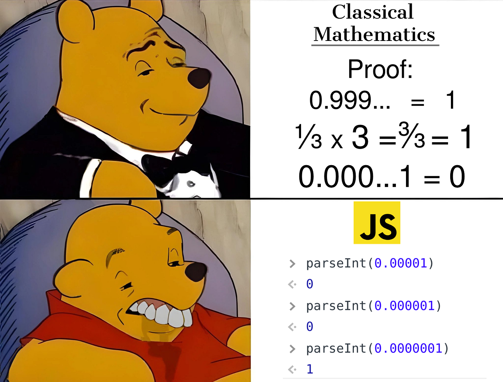

My Future
I don't really know what I'm going to be doing in the future. It's kind of scary actually, having to make big career decisions. Instead I'm going to tell you bits and pieces about some different areas of computing that I'm interested in and what I might do if I choose to settle down there.

I want to delve into advanced AI and ML to model and solve complex problems. In particular, I want to look at intelligent decision making. I know the possibilities are vast and because of this I intend to specialize in two areas, natural language processing and computer vision. I have always kind of thought both of these areas are super cutting edge and I feel like using my capabilities to enhance what AI and ML is already capable of would be really cool.
I haven't really touched frontend. I am keen on learning and later mastering modern frameworks and technologies. From FE frameworks like React and Angular to backend technologies like Node.js, I want to learn it all. "Responsive and feature-rich web applications" is something I hear thrown around a lot at work, maybe this is something work exploring.

I learnt linux and VIM for the first time right here in Web Sys! With the digital landscape becoming increasingly complex, we're all hearing basically constantly how important security has become. And there's so much to unpack. I've played with Attack Boxes and TryHackMe and met people a lot younger than me so much more capable and accomplished than me, I just have to get a piece of that cake. Maybe encryption? Or white collar hacking? Or threat detection?
Anyways, no matter where I go, I'm sure I'll learn plenty and expand my career. Stay tuned for more chapters in my journey through the vast and ever evolving world of CS! I'll be sure to update this website accordingly.